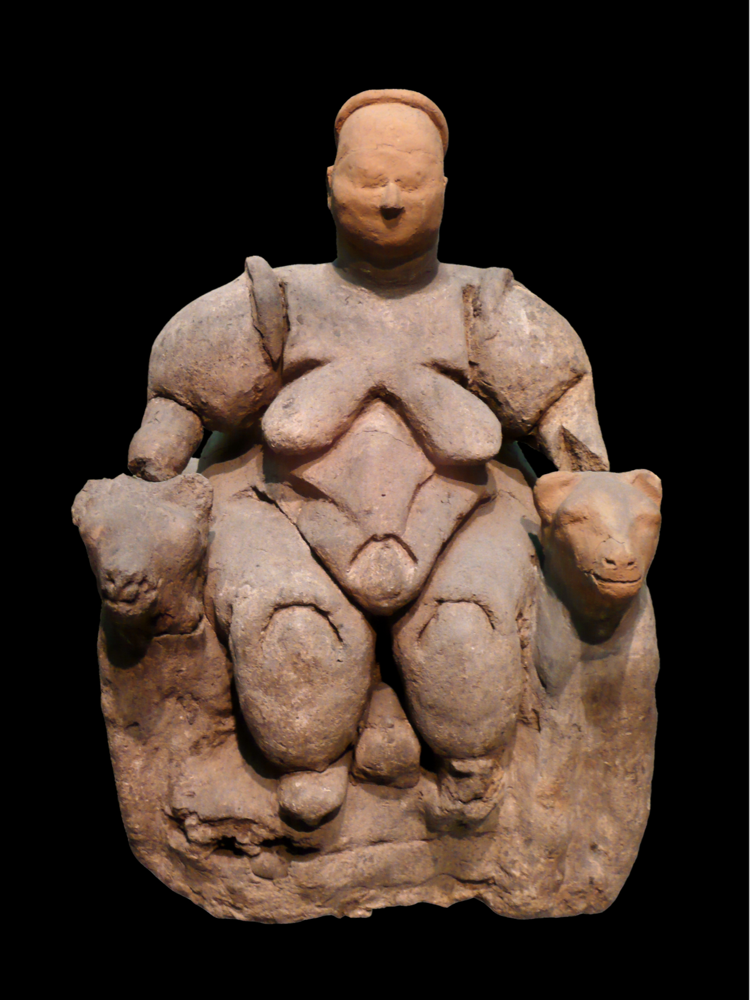
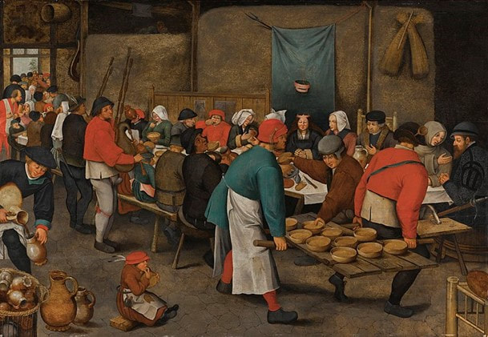

Graphic Design BA Thesis
Written by YEEUN KIM
Thesis supervisor : FÜSUN TÜRETKEN
Website guidence: THOMAS BUXO + FRANÇOIS GIRARD-MEUNIER
Abstract
Chairs have been a part of history since 5000 B.C.
and have become ubiquitous everyday objects. We are
drawn to chairs and spend most of our day sitting
on them in various environments, such as our homes,
workplaces, schools, public transport, and even toilets.
We have a reciprocal relationship with chairs as they
allow us to sit comfortably and, in turn, shape us as
individuals and societies through their design, placement,
and usage. The act of sitting on chairs has many implications
weaving lots of stories. Even out of the chairs, still,
the stories continue with new ways of sitting. This paper
seeks to explore how chairs and sitting are interrelated
across these three levels: historical, cultural, and political.
This is the story of my first chair in my life: In Korea,
there is an old culture called the 100th-day feast. When
medical technology was less developed, people held a feast
or babies because heaven helped them to endure the first
100 days
of their lives. Now its meaning might have disappeared,
although infants frequently still do not reach their first 100
days of life. Still, it is a tradition that remains. This feast
commemorated my own 100th day of life, and for a photography
session to capture that moment, babies like me with limited
back strength were seated in a hard chair to keep them upright.
My facial expression likely showed confusion and discomfort
as I was being placed in a chair for the first time by my
parents or the photographer. Back to the present, while I
write this thesis, I am sitting in a chair, which is obvious.
I have been sitting in chairs ever since my 100th days, but
this time I was doing it voluntarily withoutresistance, and
it happens in a very natural way always. Since when I get used
to this kind of wooden, hard and stiff café chairs.
The same concept that applies to the chair applies to all of the
products we create. We are the creators of them, yet when they are
constructed, they shape us.
1Cranz, Galen. The Chair: Rethinking Culture, Body, and Design. W.W. Norton; Company, 2000.
It left its mark on the human body and human consciousness.
2Cranz, Galen. The Chair: Rethinking Culture, Body, and Design. W.W. Norton; Company, 2000. Thus, chairs are objects that are
placeholders and containers of habitual, ritual, and political as well
as socio-economic contexts.3Source Füsun Türetken, 2022
Chapter 1 Backrest
On a historical level
The democratization of chairs and of sitting
The chair, one of theobjects that can be found anywhere and the furniture in closest contact with the human body, is a symbol that contains the history and culture of humanity. It has existed for around 8000 years in history and the first chair as antiquity is preserved as a part of a sculpture. The Seated Woman of Çatalhöyük is a tiny clay figure found at the Çatalhöyük archaeological site (in modern-day Turkey) that goes back to around 6000 BCE and is believed to be the first urban civilization of humankind. It is one of many such figurines that have been found at the site. The figurine, which stands about 7 inches tall, shows a seated woman with her arms folded across her chest. It was a symbolic or ritualistic depiction of a seated person, not a realistic representation of a seated person, which was likely used in fertility or ancestor worship rituals. The figure's posture, with her arms folded across her torso, suggests introspection or reverence.
1
Raddato, Carole. “Seated Woman of Çatalhöyük.” World History Encyclopedia, Https://Www.worldhistory.org#Organization, 25 Feb. 2023, https://www.worldhistory.org/image/13585/seated-woman-of-catalhoyuk/.
The status of a woman was believed to be a goddess or deified person, which indicates chair was a sense of power from the prehistoric period. In addition, for people who were hunting, cultivating, and moving all the time for their survival, chairs may be luxurious items and belonged to only a few leaders who could keep their bodies in one place without physical labor. Chairs that existed long before the furniture was created tell that it was not an object that existed for practical reasons and emphasizes that their origin is a throne.
 Figure 1 : Seated Woman of Çatalhöyük
In ancient times (3000 BC – AD 500) when there was hardly furniture in each household, furniture was a status of the rich. Especially chair was a symbol of the owner's wealth and power
that only a person of noble status could use.
2John Kurtich, Garret Eakin, Interior Architecture, p.306
Depending on which power prevails between the monarchy and the religious system, the center of power has shifted. The difference in power and class between the person sitting on the throne and the rest standing was distinctive. The golden Throne of Tutankhamun, approximately 1325 B.C., illustrated the difference between the ruler sitting on a chair and the ruled standing beside him. From Egypt to Rome, in ancient civilizations, they were reserved for the elite and used as a symbol of power and status. The given privilege for few elites was continued till medieval period in Europe. Chairs were not still usual furniture and were reserved for the highest-ranking members of society, during the medieval period. Ordinary people tended to possess little furniture and sat on whatever was available—a bench, a barrel, the ground. However, chairs with arms and backs were reserved for Very Important People.
3Friedman, Uri. “The 5,000-Year History of the Chair.” The Atlantic, Atlantic Media Company, 30 Aug. 2016, https://www.theatlantic.com/international/archive/2016/08/chairs-history-witold-rybczynski/497657/.
Although chairs were captured in ordinary households, Flemish renaissance painter Pieter Bruegel’s painting shows that until the 16th century, symbolism of chairs of power was more crucial than the role of practical tools for sitting and resting. This painting titled Peasant Wedding from 1567 demonstrates socially stratified sitting by depicting the wedding scene of one peasant's family. Only the head of the household, believed to be the father of the bride, sits alone in a chair with a backrest. It is very distinct from other people inclusive of his spouse and daughter sitting on a long bench or stool without a backrest. Authority of the patriarch is delivered in a place through the chair.
 Figure 2 : The Elder, Pieter Bruegel. The Peasant Wedding. 1567
Only after the Industrial Revolution in the nineteenth century was it possible for everyone, regardless of class or authority, to sit in chairs with backrests. The Thonet No.14, more famous for the bistro chair, was the first mass-produced chair. Designer Michael Thonet invented the technology to bend solid wood by steaming to reduce the time and labor involved in laminating or bundling so that it was possible to make a numerous number of chairs compared with the numbers master artisans made for the same time. Also, it was calculated to cost the same as 36 eggs or a
bottle of good wine. Fifty million chairs were sold and spread ever since it was made from 1859 to 1930. Also, after 1950s, plastic was new material for production of chair. It became to possible to make one monobloc chair in a two mins and is the most widely used piece of furniture in the world. The white, sometime blue or red, plastic chairs, which cost approximately $3.50 to produce
4Zuckerman, Ethan. Those White Plastic Chairs - the Monobloc and the Context-Free Objectethanzuckerman. 15 Jan. 2021, https://ethanzuckerman.com/2011/04/06/those-white-plastic-chairs-the-monobloc-and-the-context-free-object/.
, is found wherever there is a need for cheap seating nowadays – from in European gardens to African cafés. Due to mass production, almost of people could possess each chair or more, which means that chairs and sitting have been democratized.
Sitting from factory model school
Industrialism leaded the democratization of sitting, but at the same time, it was a starting point where contemporary people have been bound to sit in a chair. It starts when we go to school where we learn to sit on a chair for enough duration of time. School teaches students to sit at their own place, and this acquisition about sitting was a part of the outdated education system. After the Industrial revolution, compulsory education became boosted regardless of classes since the government and factories needed to educate children to raise them as potential workers of society under the necessity of limitless labour for economic development. Since the late 19th century, the state-led public education system has spread, mostly from the Factory-model education system, which was designed for Industrialism. The aim was to produce educated citizens capable of entering the labour force and contributing to the industrial economy. Also known as the Prussian education system, it had been actively accepted not only throughout Europe but also in the United States and Japan.
The "cemetery method"(cemetery seating) refers to the practice of arranging classrooms in a factory-model so that they resemble cemeteries, with the students sitting in rows and remaining very still and silent. That was acceptable decades ago when schools were designed on the factory model, and it has persisted well into the 21th century.
5Zuckerman, Ethan. Those White Plastic Chairs - the Monobloc and the Context-Free Objectethanzuckerman. 15 Jan. 2021, https://ethanzuckerman.com/2011/04/06/those-white-plastic-chairs-the-monobloc-and-the-context-free-object/.
During the Industrial Revolution, factories required employees who were punctual, obedient, and capable of performing standardized tasks. Creative employees were not wanted. Because of the way the classroom was set up, students took on the role of passive recipients of instruction, and "learning" was narrowly defined as the capacity to remember and retain information.
Korea was one of the nations which adopted the Factory-model school under the colonialism of Japan from 1906. The classroom I experienced in 2010s in South Korea had been parallel with the one from the 1900s. A big blackboard, a platform for teachers and rowed desks and chairs were great arrangement for examining and catching students snoozing or distracted and for establishing and strengthening educational authority. This shape of seating arrangement gathers power and authority in classroom, to teachers. Don Johnson, an American philosopher, and human body researcher at the California Institute, concerned that the way children sit at school is evidence of confusion in educational philosophy. He explains that sitting quietly in a row of chairs is essentially a way for teachers to maintain a specific conception by maintaining authority and theory while
keeping children safe.
6Cranz, Galen. The Chair: Rethinking Culture, Body, and Design. W.W. Norton Company, 2000.
The legacy of the education system still teaches children to sit in the 21st century. It gives children a sense that sitting for a long time is normal and a part of preparing of adult life. The students who acquire the sitting went into society with the chair embed as part of their bodies.
Sedentary life
Sedentary life in full scale was created in the 19th century. At this time, chairs spread rapidly and became one of the most powerful symbols of the Anthropocene body.
10Cregan-Reid, Vybarr. Primate Change: How the World We Made Is Remaking Us. Cassell, an Imprint of Octopus Publishing Group, 2018.
The concept of white collar, office worker, came into being. As technology developed and efficiency increased, the diversity of work decreased since 19th century as attributes of labour became simpler. Office working seems to be pleasant and safe, unlike previous work at factories. However sedentary lifestyle became a new smoking to us. A lot of studies and research proved that sitting is bad for health and nobody question about it now. As part of a workplace health report, A life-sized doll shows how the average office workers will look like in 20 years with a number of medical problems. This alien figure of Emma with a hunched back, protruding stomach, and sore eyes are coming future, unless changes to the sedentary environment are made. This kind of research and articles is always unpleasant but not many people care it and there is no fundamental solution as individuals. Sitting is not a natural way of life and we live in an environment where it is personal responsibility. Human being designed and made trillions of chairs; however they actually have shaped our lives back the past 200 years.